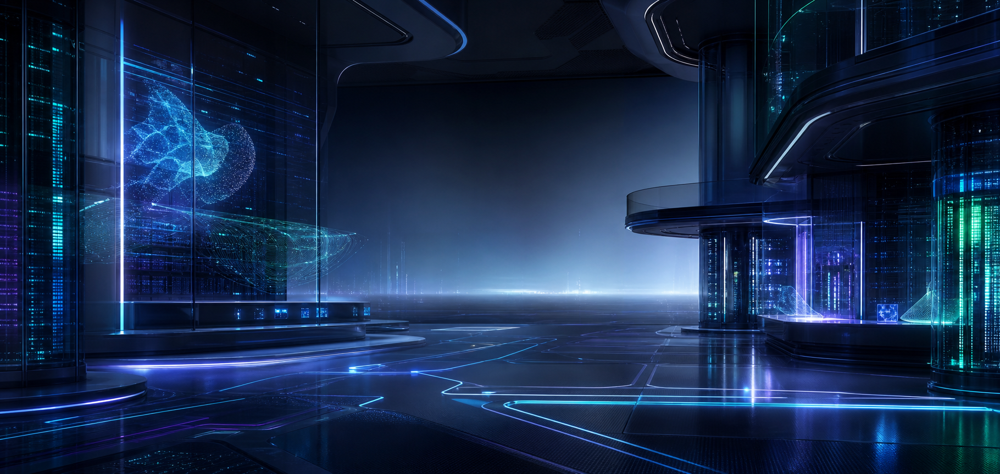

Managed IT fuer Unternehmen mit Anspruch
Keine Standard-Agenturseite. Eine digitale Kommandozentrale fuer moderne Unternehmens-IT.
Kuehnel Systems plant, modernisiert und betreibt Infrastrukturen, auf die sich Teams im Alltag verlassen koennen: schneller, sauberer, sicherer und mit klarer technischer Linie.
On-Prem
Hybrid Cloud
Microsoft 365
Virtualisierung
Security
Automation

Live Operations
Stabile Systeme unter Last
Security Layer
Segmentiert, gehaertet, ueberwacht
Automation
Weniger manuelle Reibung im Betrieb
Operations Platform
IT wird hier als System gedacht, nicht als lose Sammlung einzelner Baustellen.
Infrastruktur, Identity, Security, Backup, Endpoint-Betrieb und Automatisierung greifen als zusammenhaengende Plattform ineinander. Das senkt Abstimmungsaufwand und schafft technische Ruhe im Tagesgeschaeft.
Netzwerke, Server, Cloud-Dienste und Arbeitsplaetze werden mit Blick auf den realen Betrieb zusammengestellt.
Segmentierung, Hardening, Backup-Strategien und klare Standards bekommen Prioritaet vor Buzzwords.
Wiederkehrende Aufgaben werden konsequent reduziert, damit Zeit in Stabilitaet und Entwicklung fliesst.
Architecture Board
Unternehmens-IT im Gesamtbild
Leistungsfelder
Technische Leistungen, die in echten Betriebsumgebungen tragen.
IT-Support & Administration
Saubere Benutzerverwaltung, klare Verantwortlichkeiten und schnelle Stoerungsbearbeitung ohne operative Unordnung.
Netzwerk & Infrastruktur
Routing, WLAN, Firewall, Standortvernetzung und Netzwerkdesign mit Fokus auf Stabilitaet und Segmentierung.
Server & Virtualisierung
Windows Server, Linux, Proxmox, Storage und Cluster-Strukturen fuer kontrollierbares Wachstum.
Cloud & Microsoft 365
Identity, Exchange, Teams, Sicherheitsrichtlinien und strukturierte Tenant-Administration statt Flickwerk.
Security & Backup
Absicherung gegen Ausfaelle, Datenverlust und Fehlkonfigurationen durch Standards, Recovery und Monitoring.
Automatisierung & Digitalisierung
Wiederkehrende Prozesse werden mit messbarem Nutzen automatisiert, nicht nur aus technischem Spieltrieb.
Wirkung
Der WOW-Effekt kommt nicht nur ueber Optik, sondern ueber die Art, wie Kompetenz sichtbar wird.
Die neue Seite positioniert Kuehnel Systems nicht als generischen Dienstleister, sondern als technischen Partner mit Betriebsverantwortung, Struktur und Tempo.
Architektur und Sicherheitslogik werden als zusammenhaengendes System praesentiert.
Leistungsfelder, Vorgehen und Nutzen sind direkt lesbar und nicht im Agentursprech versteckt.
Die Visualsprache wirkt dichter, moderner und deutlich naeher an High-End-IT als zuvor.
Projektablauf
Vom ersten Audit bis zum laufenden Betrieb ohne unklare Zwischenzustaende.
Audit
Bestand, Risiken, Engpaesse und Abhaengigkeiten werden nachvollziehbar aufgenommen.
Blueprint
Zielbild, Prioritaeten und technische Linie werden vor Umsetzung sauber definiert.
Rollout
Migration, Aufbau oder Optimierung erfolgen kontrolliert und mit Blick auf den Live-Betrieb.
Hardening
Monitoring, Backup, Security und Prozesse werden verbindlich nachgezogen.
Betrieb
Die Umgebung wird weiterentwickelt, dokumentiert und langfristig sauber betreut.
Kontakt
Wenn die bestehende IT mehr Reibung als Ruhe erzeugt, ist das der richtige Startpunkt.
Ob Infrastruktur-Umbau, Sicherheitsniveau, Cloud-Ordnung oder Automatisierung im Tagesgeschaeft: Kuehnel Systems baut die technische Grundlage fuer den naechsten belastbaren Zustand.